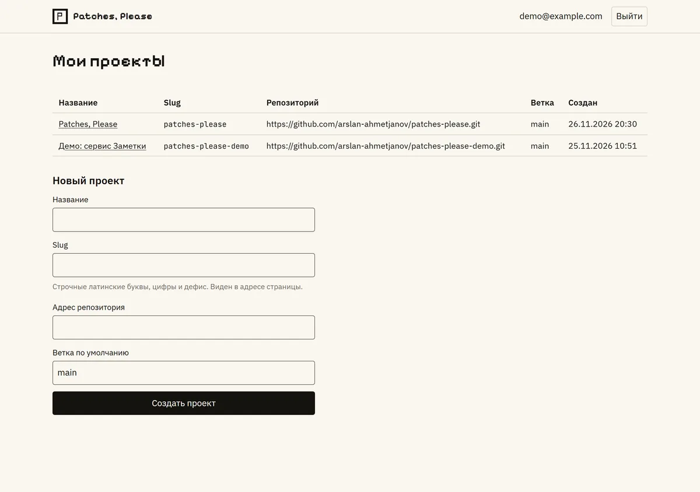
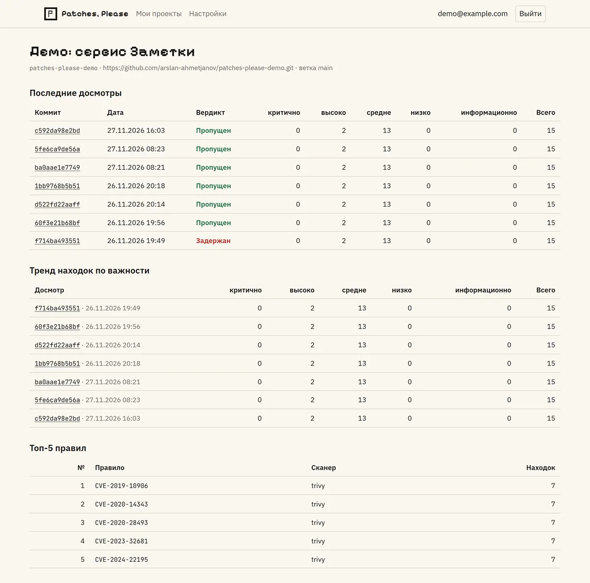

Проверка безопасности, которая останавливает релиз
Patches, Please встраивается в конвейер CI, запускает три сканера, приводит находки к одной модели и блокирует выпуск релиза, если в коде появилась критическая уязвимость.
- Коммит из CI
- Semgrep, Gitleaks, Trivy
- Единая модель находок
- Политика и опись
- Вердикт и код выхода
Что делает система
- Один вход для трёх классов проверок. SAST по коду, поиск секретов и уязвимые зависимости с приоритетами. Сканеры живут в образе worker и работают офлайн.
- Одна модель находок. SARIF нормализуется, находка получает отпечаток и переезжает из прогона в прогон как `existing`, а не всплывает заново.
- Политика проекта. Порог по severity, опись (baseline) и разрешения со сроком. Вердикт `pass` или `fail` считается на сервере.
- Код выхода для пайплайна. Клиент ждёт вердикт и возвращает `0` при `pass`, `1` при `fail`, остальные коды описывают ошибки и таймаут.
- История и отчёт. Прогоны, метрики, тренд, JSON и HTML по каждому прогону; секреты в находках маскируются до записи.
- Задержан на уязвимом коммите демонстрационного репозитория
- Пропущен после того, как исторические находки попали в опись
Как это выглядит
-

Проекты: объект проверки и адрес репозитория. -

Прогон: вердикт, метрики и находки с фильтрами. -

Проект: тренд, последние прогоны и топ находок.
Быстрый старт
Нужны Docker Desktop (или Docker Engine с плагином Compose) и uv. Подробный порядок с ожидаемым выводом каждой команды лежит на странице «Установка».
git clone https://github.com/arslan-ahmetjanov/patches-please.git
cd patches-please
uv sync
cp .env.example .env
docker compose up -d --build
curl http://localhost:8000/health
uv run alembic upgrade head
Ответ `{"status":"ok"}` значит, что API поднялся. Вход в интерфейс:
http://localhost:8000/login. Регистрации нет, учётную запись,
проект и токен создаёт scripts/seed_demo.py: это шаг 8 в
инструкции по установке.
Что нужно
| Что | Зачем |
|---|---|
| Docker Compose | Четыре сервиса: PostgreSQL, Redis, API и worker. |
| uv 0.13 или новее | Миграции, клиент для CI, тесты, установка Python 3.12. |
| Свободные порты 8000 и 5432 | API и PostgreSQL на хосте. Порт меняется в .env. |
| Публичный репозиторий для проверки | Worker клонирует его без учётных данных; или свой стенд. |
Границы
- Развёртывание рассчитано на Docker Compose на одной машине, без кластера и внешней PostgreSQL.
- Trivy проверяет файловую систему репозитория, а не образы контейнеров.
- База уязвимостей Trivy зашита в образ и обновляется пересборкой worker.
- Клон репозитория идёт по сети: приватный адрес даёт прогон со статусом
error, пока не настроен доступ.
Остальные ограничения и типовые ошибки: «Неполадки» и «Вопросы».